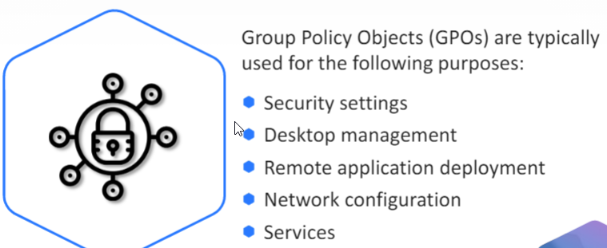

-----------------------------------------------------------------------------------------------

GPOs have preset configuration policies
Make use of a client side extension
Default update time is 90 minutes but can be set manually or refreshed immediatly
-----------------------------------------------------------------------------------------------

Where settings conflict across policies, the last applied will be configured
GPO link order can modify the default processing order shown.